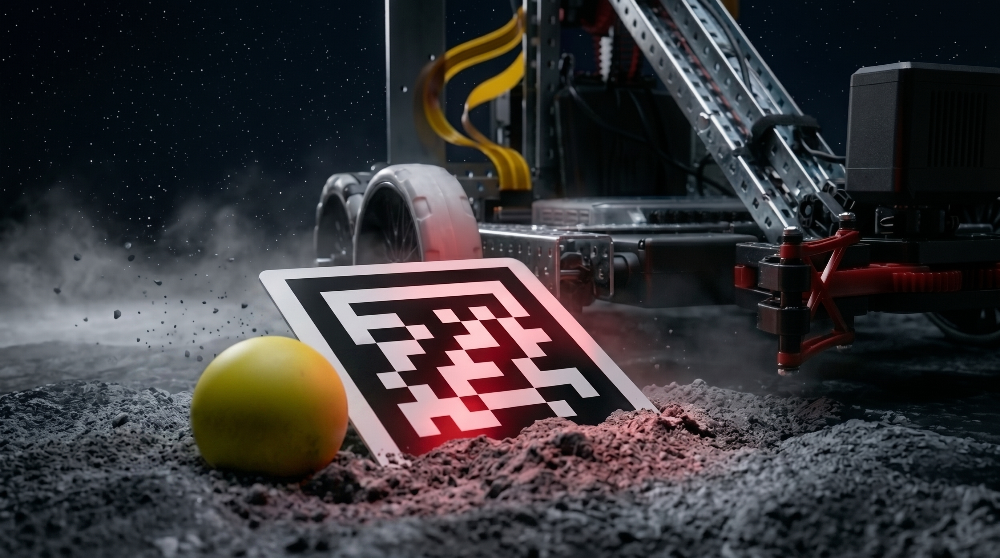

Control hardware and program surface.
Gauntlet Capstone · X35 Self-Model Premise
The Vexy Mission
A robot that can be wrong can learn.
Vexy is built to learn from reality: it compares what it expects from its own body against what a real run proves.
Grace · mission briefing
Introducing Vexy
Vexy anchors language models in physical reality.
VEX V5 gives the project a physical body: VEX V5 Brain, Smart Ports, Smart Motors, wheels, red claw mechanics, battery behavior, Raspberry Pi vision, AprilTag localization, and a yellow ball mission sample. Those constraints are exactly what make the self-model meaningful.
Drive, arm, claw, torque and position evidence.
Grab the yellow ball; expose force and alignment limits.
Camera Module 3, AprilTag pose, and object hints.
Predicted, observed, gap, and revision input.
VEX V5 Brain, Smart Ports, Smart Motors, red claw, Raspberry Pi vision, AprilTag marker, yellow ball, telemetry, contracts, and LLM self-model as one accountable system.
Imagined self, measured self, prediction error, residual model, and revised language self-model explain how a physical run can challenge the robot's own description.
The yellow ball turns the premise into visible behavior: grab is the safety net, pull is the calibration spine, and throw is the future hero primitive.
Loop 1 calibrates one known body from evidence. Loop 2 is the future morphology loop where the LLM can propose a redesigned body and test it again.
Vexy senses the tag and ball, acts through bounded robot commands, measures the result, and improves only when evidence proves what changed.
Choose Grace diagram
Selected: VEX Body To Language Model
Grace speaking notes
Open with the premise: "Self-Modeling Machines, in Language." Explain that Vexy is a real VEX V5 robot: VEX V5 Brain, Smart Ports, Smart Motors, wheels, red claw, Raspberry Pi, camera, AprilTags, and yellow ball. Then name the loops: Loop 1 calibration on one body; Loop 2 future morphology redesign. Close with grab as the proof task, pull as the calibration spine, and throw as the future capability arc.
David Taylor · learning loop
Learning is a loop, not a claim.
David Taylor
Small learning loop, Generational Loop, and next proof
The small learning loop is not a slogan.
It generates a plan, executes it, analyzes telemetry, and starts over. The larger Generational Loop asks the bigger question: what if an LLM could redesign its own body and adapt to conditions in the real world?
Mission thread
David defined learning as plan, execute, analyze telemetry, and start over. Next, Erick makes that motion trustworthy with bounded commands.
LLM proposes a bounded action plan.
Vexy attempts a simple task like putting the ball in the bin.
Motor samples, vision state, and operator results expose the gap.
The long-term loop would let future versions propose morphology changes, then test them against real-world evidence.
Powerful but often locked inside a sub-symbolic tensor that humans cannot read.
LLMs can generate robot designs, but the work is usually in simulation.
Can optimize control parameters on real hardware, but without a self-model component.
Combines evidence, language self-modeling, and LLM-redesignable morphology.
Plan, execute, analyze telemetry, revise, and eventually redesign the body. This keeps David focused on learning loops instead of repeating the hardware intro.
Numerical self-modeling gives adaptation, LLM morphology gives design generation, LLM self-improvement gives hardware tuning, and Vexy combines those ideas with readable evidence.
Motor samples, vision state, operator results, and run outcome become the evidence that can justify a next model or a future morphology change.
Today: simple tasks and ball-in-bin progress. Next: stronger evidence loops. Future: component redesign for increasingly complex tasks.
The novelty is combining a readable language self-model, real telemetry, critic review, and future morphology generation in one evidence-driven experiment.
Choose David diagram
Selected: Generational Loop
David speaking notes
David should say: the small loop is not "LLM says robot improved." It is plan, execute, analyze telemetry, and start over. Then zoom out to the Generational Loop: what if an LLM could redesign its own body and adapt to the real world? Ground the novelty in three inspirations: numerical self-modeling, which stays in a sub-symbolic tensor; LLM morphology generation, which is mostly simulation; and LLM self-improvement, which tunes control parameters on hardware without a self-model. The honest status is that challenges restricted us to simple tasks, and Vexy was beginning to conquer putting the ball in the bin. The next step would be letting Vexy redesign component parts into new forms for increasingly complex tasks.
Part 2 · The body becomes the model
The hardware and the language model have to meet in the middle.
The demo is technically interesting because the robot is not just executing a script. It is moving through a pipeline where hardware, perception, contracts, telemetry, evidence, language, critics, and human approval all have a job.
Physical VEX body
Vision and AprilTag observations
Bounded command contract
Run evidence packet
Language self-model
Critic gate and approval
Erick · hard technical problem
The hard part is trusted motion.
Erick
The Hard Technical Problem
Making the robot move is one problem. Making motion trustworthy is harder.
Trusted motion means every LLM intent has to pass through a command contract: bounded vocabulary, limits, watchdogs, ack/fault states, and evidence capture. The robot can move only in ways the runtime can validate and the learning loop can inspect.
Mission thread
Erick bounded the motion with contracts, watchdogs, and ack/fault proof. Next, Jake turns each run into evidence the model can inspect.
Intent
Vocabulary
Limits
Watchdog
Ack or Fault
Evidence
Intent moves through bounded vocabulary, limits, watchdogs, ack or fault states, and evidence before anyone claims the motion was safe or meaningful.
Every command should land in a known state: accepted, rejected, stale, completed, or faulted. That envelope keeps the LLM bounded.
The LLM reasons about safe command packets and expected outcomes; low-level motors, watchdogs, and timing stay inside the robot control layer.
Wheel slip, motor drift, camera error, moving object, AprilTag angle, and claw misalignment are normal real-world failure paths that the system has to name.
A trusted run connects prediction, command, observation, telemetry, proof, and explanation so the motion can be measured instead of merely asserted.
Choose Erick diagram
Selected: Trusted Motion Gates
Erick speaking notes
Use the exact line: "Making the robot move is one problem. Making it move safely, measure itself, and explain what changed is much harder." Erick's section is the command boundary: the LLM proposes intent, but the robot runtime validates bounded command packets. Name the concrete guardrails: vocabulary, limits, TTL/clamps, watchdogs, ack/fault states, and evidence capture. Every command should resolve as accepted, rejected, stale, completed, or faulted. If a command has no evidence trail, the model cannot safely learn from it. Close with: "The challenge is not motion or action. The challenge is trusted motion."

Part 3 · Sense before action
Jake · perception to proof
Vision becomes evidence.
Jake
Perception, localization, and evidence
Perception turns motion into evidence.
Vexy does not just need camera frames. It needs AprilTag localization, object positions, scene state, and contract-valid evidence so the control loop and self-model can trust what the robot saw.
Mission thread
Jake closes the loop: camera observations become localized scene evidence, then prediction, observation, gap, and update keep learning honest when reality pushes back.
A run becomes useful when command, vision, telemetry, predicted state, observed state, gap, and update all travel together as one inspectable packet.
The timeline makes the learning signal plain: what Vexy expected, what reality measured, and where the two disagreed.
AprilTags, yellow ball detection, object confidence, camera pose, and scene coordinates become the structured evidence that grounds the operator and self-model loop.
Each run can lower prediction error only when the measured gap is captured, compared, and reused as calibration evidence.
Structured run records give the operator, critic, and LLM the same evidence trail instead of relying on memory or vague narration.
Choose Jake diagram
Selected: Perception to Proof
Jake speaking notes
Jake can say: the Pi camera gives us frames, but the system needs structured state: where the robot is, where the AprilTag and yellow ball are, and how confident those observations are. That scene evidence is what makes the later gap meaningful.
Final message
Thank you for joining the Vexy Mission.
Vexy connects a real VEX V5 robot to a language-based self-model. Each run starts with a claim about the body, passes through bounded robot commands, and comes back as evidence: telemetry, vision state, operator result, and gap. The next model only earns trust after that evidence moves through the analyzer and critic gate.